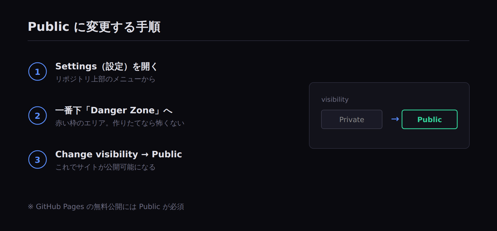
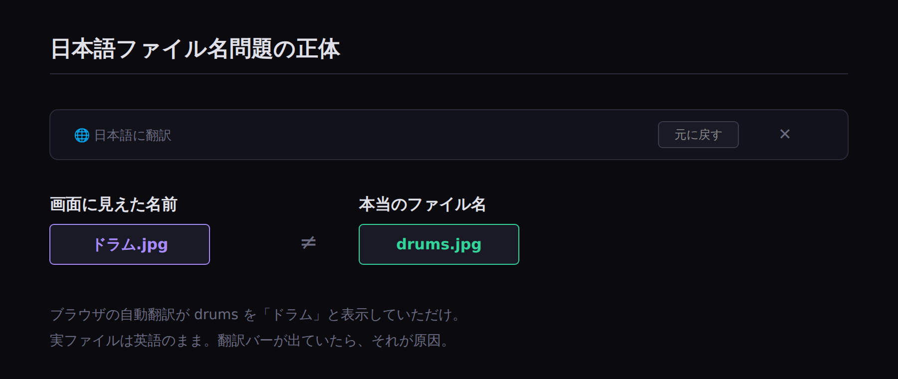

GitHub初心者がつまずいた
5つのポイント
はじめに
前回の記事で、AIと一緒にホームページを作った流れを紹介しました。その中で、特にGitHubの設定でいくつもつまずきました。
この記事では、初心者の私が実際にハマった5つのポイントと、その解決方法をまとめます。同じところでつまずく人は多いはずなので、先に知っておくと安心です。
つまずき1：リポジトリが「Private（非公開）」になっていた
リポジトリ（ファイルの入れ物）を作ったのですが、最初は「Private」という非公開状態になっていました。
GitHub Pagesの無料プランでサイトを公開するには、「Public（公開）」である必要があります。Privateのままだと、いくらファイルを入れてもサイトは表示されません。
解決方法
リポジトリの「Settings（設定）」の一番下、「Danger Zone（危険地帯）」にある「Change visibility」から、Publicに変更しました。「危険地帯」という名前にビビりますが、今回のような作りたてのリポジトリなら問題ありません。

Public化の手順
つまずき2：ユーザー名がメールアドレスと同じだった
これは盲点でした。リポジトリ名は ユーザー名.github.io にする必要があり、それがそのまま公開URLになります。
ところが私のGitHubユーザー名は、普段使っているメールアドレスの一部と同じ文字列でした。つまり、そのまま公開するとURLにメールアドレスが載ってしまう状態だったのです。
解決方法
GitHubのユーザー名そのものを変更しました。アカウントの「Settings → Account → Change username」から変更できます。私は jun-canvas というシンプルな名前に変えました。
公開URLは自分の「顔」になる部分なので、ここは妥協せずに決めるのがおすすめです。
つまずき3：同じファイルが何個もアップロードされた
ファイルをアップロードしようとしたとき、操作を繰り返してしまい、同じ index.html が何個もアップロード待ちのリストに並んでしまいました。エラーも出ました。
解決方法
アップロード画面で、各ファイルの右にある「×」を押して全部消し、改めて1つだけドラッグし直しました。落ち着いて1ファイルずつ確認するのが確実です。
つまずき4：日本語のファイル名問題（実は勘違い）
アップロードした画像ファイルが、GitHub上で「ドラム.jpg」と日本語表示されていて焦りました。HTMLは英語名の drums.jpg を探すので、これでは画像が表示されないはず…と思いました。
ところが原因は、ブラウザの自動翻訳機能でした。drums という英単語を、ブラウザが親切に「ドラム」と日本語訳して表示していただけだったのです。実際のファイル名は英語のままでした。
教訓
ファイル名が変に見えたら、まずブラウザの翻訳がオンになっていないか確認するといいです。画面右上に「日本語に翻訳／元に戻す」というバーが出ていたら、それが原因です。

原因はブラウザの自動翻訳だった
つまずき5：画像が表示されない原因
カードの背景に画像を入れたのに、最初は表示されませんでした。
原因と解決方法
HTMLのコードが探しているファイル名と、実際にアップロードしたファイル名が一致していないと、画像は表示されません。例えばコードが drums.jpg を探しているのに、ファイルが ドラム.jpg だと見つけられないのです。
ファイル名は「コードが指定している名前」と「実際のファイル名」を、英語で完全に一致させる。これが鉄則でした。
まとめ
初心者がGitHubでつまずきやすいポイントは、だいたいこの5つに集約されます。
- リポジトリはPublicにする
- ユーザー名（＝URL）は公開して大丈夫な名前にする
- ファイルは1つずつ落ち着いてアップする
- 表示がおかしいときはブラウザ翻訳を疑う
- ファイル名はコードと完全一致させる
どれも一度知ってしまえば簡単なことばかりです。最初は戸惑いましたが、AIに画面のスクリーンショットを見せながら相談すれば、その場で解決できました。